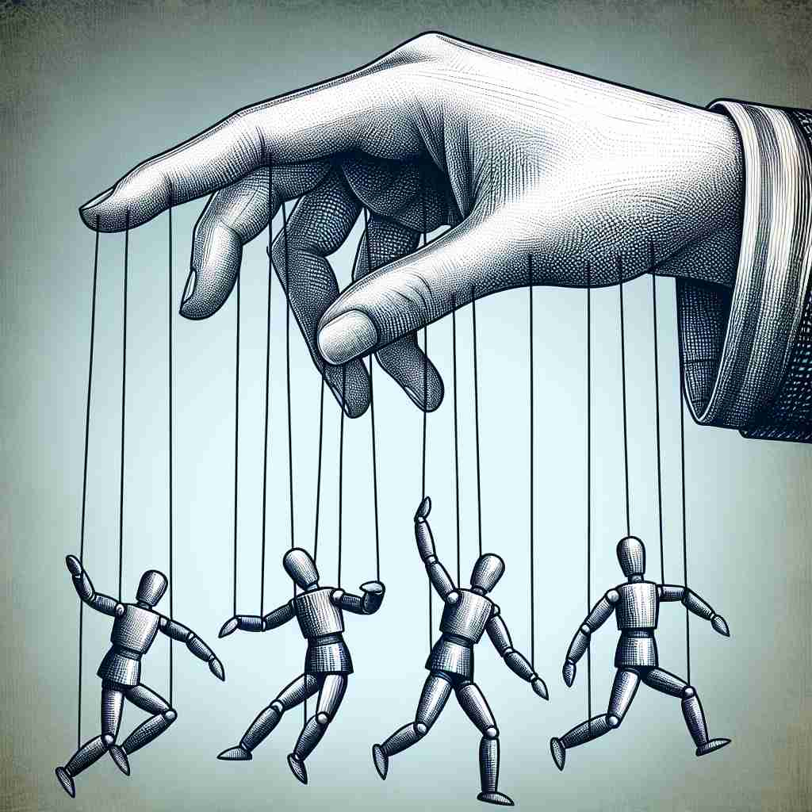

💬 The driver can control the car smoothly on the road.
💬 The parent wants to control screen time for the children.

💬 The hand can control the puppets using strings.
🔈 [kən'trəʊl]
🗝️ v. to have power over something or someone
🖼️ 在一个古老的城堡中，国王坐在他的王位上，俯视整个王国。他的每一个命令都被迅速执行，体现了他对国家和人民拥有的绝对控制。
🔍 想象你手握一个操纵杆，这个操纵杆代表着'control'的核心含义——拥有权力或能力去影响某事或某人。无论是限制、管理、操作还是自我约束，都可以联想到你通过这个操纵杆来实现不同程度的控制。这个核心概念贯穿了'control'的各种用法，帮助你更容易理解和记忆它的多重含义。
💬 The driver can control the car smoothly on the road.
💬 The parent wants to control screen time for the children.
💬 The hand can control the puppets using strings.
🌳 由词根 "con-"（表示一起）和词根 "trol"（来自拉丁语 "trollare"，意为滚动或管理）组合而成，表示对某物的管理或掌控。
💡 记忆时可以想象 "control" 是将许多事物聚集一起进行管理，就像控制一辆车要管理各个方面一样，这样可以帮助记住它的含义。
🗝️ v. to limit or restrict
🖼️ 在学校操场上，老师正用手势引导学生排队，以避免混乱。他设定了明确的界限，让孩子们在范围内活动，从而限制了他们过度的自由。
💬 We need to control the spread of the disease.
❓ 通过权力来限制或约束
🗝️ v. to manage or direct
🖼️ 在一个繁忙的电视演播室里，导演坐在控制台后，指挥着所有的摄像机和工作人员。他用耳机发出指令，确保所有人都按计划行动，完美地管理了整个节目的进行。
💬 She controls a large team of researchers.
❓ 运用权力来管理或指导
🗝️ v. to operate or regulate a machine or system
🖼️ 在工厂里，工人站在一个大型机械设备旁边，旋转按钮和拉动杠杆，他熟练地控制着机器的运作，确保生产线顺利运行。
💬 The pilot controls the aircraft.
❓ 对机器或系统有操控权
🗝️ n. power to influence or direct people's behavior
🖼️ 在一个团队会议中，团队负责人用冷静和自信的语调发言，他的话深深影响着团队的方向，展示了他对团队行为的影响力。
💬 The manager has control over hiring decisions.
❓ 从动词含义衍生出的名词形式
🗝️ n. a device used to operate a machine
🖼️ 在客厅里，孩子们正开心地玩着电子游戏，每个人手中都有一个游戏控制器，灵活地按下按钮，操控着屏幕上的角色。
💬 The remote control for the TV is on the table.
❓ 用于实现控制功能的具体物品
🗝️ n. self-restraint
🖼️ 在一个豪华的宴会上，一位绅士面前摆满了美味佳肴，他克制住了想要一次吃个饱的欲望，展示了他极强的自我约束力。
💬 He lost control of his emotions during the argument.
❓ 对自身行为的掌控